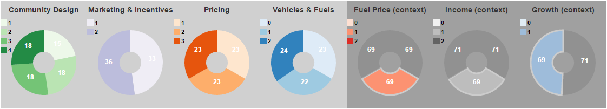
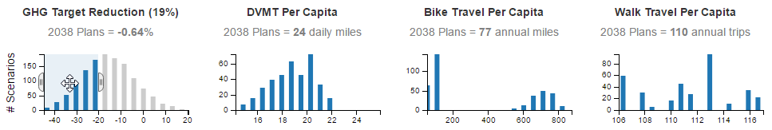

Detailed Instructions
Categories
Many factors such as land use and fuel price affect light duty vehicle travel. Because the number of factors considered is large, they were grouped into 6 categories as follows:
Policy Factors: These categories represent factors within local and state control.
- Community Design Policies that seek to enable shorter trips and alternate modes such as promotion of mixed use land use, transit service, bicycling, and parking management.
- Marketing & Incentives Policies that improve driving efficiency such as ecodriving,and Intelligent Transportation System efforts, as well as programs that reduce auto demand such as carsharing, and home or work-based transportation demand management.
- Pricing Policies that move towards true cost pricing such as road user fees to pay for the cost of operating, maintaining and improving roads, pay-as-you-drive (PAYD) insurance, and environmental impact fees such as a carbon tax.
- Vehicles & Fuels Factors representing the anticipated changes to future vehicles and fuels, in addition to those resulting from existing federal and state laws, including market changes such as the shift to electric vehicles or more fuel efficient vehicles, reduced carbon intensity of fuels, pace of vehicle turnover, and the light truck share of vehicles. Since these shifts would primarily result from additional federal and state policies promoting market changes, these scenarios assume supportive local actions that advocate for more amitious policies along with local efforts, such as installing charging stations and using landfill captured gases (renewable natural gas) to fuel buses.
Context Factors: These categories represent factors outside our control, but help evaluate the robustness of policies in the face of uncertain future conditions.
- Fuel Price The assumed market price of gasoline and other fuels (exclusive of fuel taxes).
- Income Growth The assumed growth of average per capita income, representing the health of the economy.
Levels
Several levels were defined for each of the categories. These levels are numbered to indicate the amount of change from a reference case which represents the continuation of adopted local plans, policies and trends.
- Level 1: Corresponds to the reference case.
- Level 0: Represents a retreat from current plans (such as lower parking fees or less bicycling than anticipated), or lower context forecasts (lower fuel price or lower income).
- Levels 2-3: Representing more ambitious policies or higher context forecasts (higher fuel price or higher income).
The levels are displayed in pie charts, one for each category, as shown in the following illustration. The pie charts for the policy-related categories are highlighted with a light gray background. The pie charts for the context factors are highlighted with a darker gray background.
Each pie chart has a legend showing the color associated with each level. The sizes of the pie slices show the proportions of the selected scenarios in each level. The number of selected scenarios in each level is shown in the corresponding pie slices. You can select (or deselect) the scenarios in a level by either clicking on the pie slice or the corresponding legend entry. The picture shows what it will look like when level 1 is selected for fuel price, income, and growth. The selected level is colored and the non-selected levels are grayed-out. (This is the starting condition when you open this web page.) In this instance the numbers in the selected pie slices mean that there are 69 scenarios that have reference case values for fuel price and income.
Outcomes
Given the chosen category inputs, the web page also shows future year outcomes for the following performance measures:
- GHG Target Reduction: 2005-2038 percentage reduction in light-duty vehicle GHG emissions (beyond what is anticipated to occur due to baseline assumptions regarding improvements to vehiles and fuels). RVMPO has a 2005 - 2035 state-set GHG reduction target of 19%
- DVMT Per Capita: daily vehicle miles of travel of residents divided by population.
- Bike Travel Per Capita: annual miles of resident bike travel (not including recreational travel) divided by population.
- Walk Travel Per Capita: annual residents' walk trips (not including recreation or walk to transit) divided by population.
- Air Pollution Emissions: daily metric tons of pollutants emitted from all light-duty vehicle travel (including hydrocarbons, carbon monoxide, nitrogen dioxide, and particulates).
- Annual Fuel Use: annual million gallons of gasoline and other fuels consumed by all light-duty vehicle travel.
- Annual Household Vehicle Cost: average annual household cost (thousand dollars) for owning and operating light-duty vehicles (including gas, taxes, parking, registration, depreciation, maintenance, and financing).
- Truck Delay: daily vehicle-hours of delay for heavy truck travel on area roads.
Each outcome is illustrated in a bar chart showing the range of outcome values for the selected scenarios. The bar height indicates the number of selected scenarios with that outcome value. The value for the 2038 adopted plans scenario is shown above the bar chart. The following illustrations shows what the CO2e Target Reduction, DVMT Per Capita, Bike Travel per Capita, and Walk Travel Per Capita bar charts look like when all scenarios are selected.

The bar charts can also be used to make a selection of scenarios. This can be done by hovering the mouse cursor over the bar at one end of the desired selection range. When the cursor is in the shape of a crosshairs, click and drag the mouse cursor to the other end of the desired range. The bar chart will change to show the selected range. In addition, handles will appear at the ends of the selected range. You can click one of these handles and drag it to alter the selection. You can also click on the middle of the selection (when the shape of the cursor is a crossed arrow) to drag the whole selection to a different location on the bar chart. As you make a selection in one bar chart, all the other bar charts will change to show outcomes for just the selected scenarios. The pie charts will also change accordingly to show the numbers and proportions of the selected scenarios in each level. The following illustration shows a selection made on the GHG Target Reduction bar chart and the corresponding values for the other bar charts in the row. You can see in the picture the crossed-arrow cursor shape which means that the whole selection can be dragged to a new position.
Selections can be made simultaneously on multiple pie charts and bar charts. As more selections are made, all of the charts will be updated to show the selections that meet all of the selection conditions. To clear all of the selections and return to the starting conditions, just click on one of the Clear All Selections links on the web page.
Selected Scenario Table
Finally, at the bottom of the web page is a table which shows the data for the selected scenarios, including both the input factor levels and the outcome measures. The values in this table can be copied and saved in a spreadsheet. To select the data to copy, double-click in the top left-hand cell, press the Shift key, and then click in the bottom right-hand cell. Once the data has been selected, copy it by pressing the Ctrl c keys for a Windows computer or the Command c keys for an Apple Macintosh computer. Paste as unicode text into the spreadsheet of your choice.